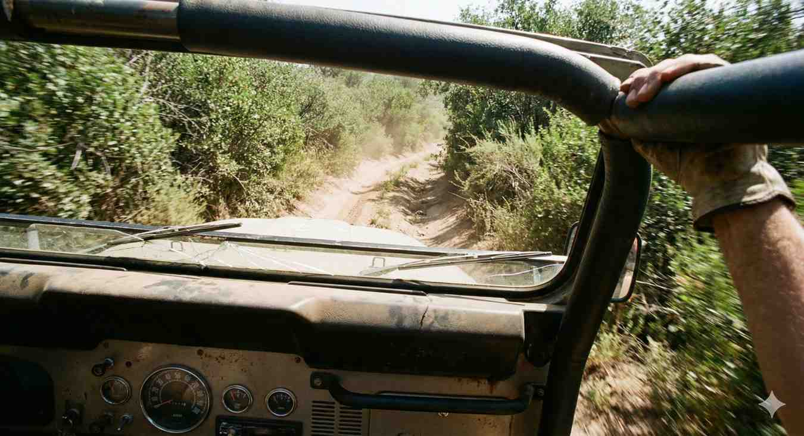
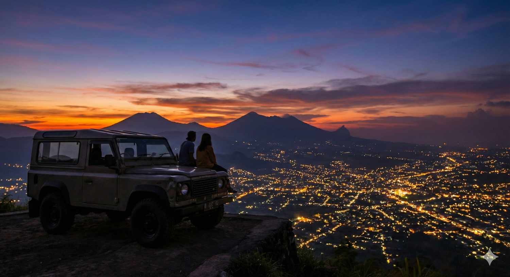

Jalur Arjuno yang Eksotis
Eksplorasi keindahan lereng Gunung Arjuno dengan Jeep rute terbaru...
Baca SelengkapnyaEdukatif | Oleh Admin | 15 Feb 2024

Persiapan matang adalah kunci keselamatan dalam medan offroad yang menantang.Petualangan offroad di Batu Malang menawarkan sensasi luar biasa. Namun, bagi Anda yang baru pertama kali mencoba, ada standar keamanan wajib yang harus dipatuhi agar pengalaman tetap seru tanpa kendala.
Sebelum menginjak pedal gas, pastikan Anda memahami fungsi tombol transmisi H/L pada penggerak 4 roda. Jeep klasik seperti Toyota Land Cruiser FJ40 atau Suzuki Jimny memiliki karakteristik unik yang membutuhkan perlakuan khusus. Mesin karburator atau diesel tua memerlukan *warming up* yang cukup sebelum melibas tanjakan terjal agar sistem pelumasan bekerja maksimal.
Selain itu, kenali juga batas kemampuan kendaraan. Tidak semua rintangan harus diterjang dengan kecepatan tinggi; terkadang teknik merayap perlahan (*crawling*) jauh lebih efektif dan aman bagi komponen as roda kendaraan Anda. Memahami *ground clearance* juga membantu Anda menghindari benturan pada area *differential* atau tangki bahan bakar.
Rem adalah komponen paling vital saat menuruni turunan tajam di lereng Arjuno. Mengingat medan di Batu seringkali basah dan licin, performa minyak rem dan kondisi kampas harus dipastikan 100% prima. Gunakan teknik *engine break* dengan gigi rendah (L1 atau L2) untuk membantu pengereman agar sistem rem tidak *overheat*.
Selalu tes injakan rem sesaat sebelum memasuki jalur rintis untuk memastikan tidak ada kebocoran pada selang fleksibel akibat guncangan selama perjalanan aspal.
"Keberanian tanpa pengetahuan di medan offroad adalah tiket tercepat menuju masalah. Selalu prioritaskan keselamatan di atas adrenalin."
Medan offroad tidak sama dengan aspal halus. Guncangan keras yang tak terduga (*jolt*) bisa membuat Anda terhempas dari kursi jika tidak terikat dengan kuat. Pastikan sabuk pengaman terkunci sempurna dan posisi duduk tegak namun tetap rileks agar tulang belakang tidak terbebani saat terjadi guncangan hebat.
Bagi penumpang di baris belakang, pastikan selalu berpegangan pada *hand rail* atau *roll bar* yang tersedia untuk menjaga keseimbangan tubuh selama simulasi medan miring atau tanjakan curam.
Banyak yang belum menyadari bahwa offroad juga memiliki manfaat terapeutik. Menjauh sebentar dari kebisingan kota dan fokus pada kendali kendaraan di tengah alam dapat membantu menurunkan tingkat stres. Konsentrasi yang dibutuhkan selama navigasi rintangan bertindak sebagai bentuk meditasi aktif yang menjernihkan pikiran.
Selain itu, hobi ini juga melatih pengambilan keputusan cepat dan keberanian menghadapi tantangan baru di luar zona nyaman harian Anda.
Untuk medan berlumpur di Batu, sedikit mengurangi tekanan ban (sekitar 15-18 psi) akan memberikan daya cengkram (grip) yang jauh lebih baik daripada ban yang terlalu keras. Hal ini memperluas bidang kontak ban dengan tanah sehingga traksi meningkat secara signifikan.
Namun, jangan lupa untuk segera mengisinya kembali saat sudah kembali ke jalan aspal agar dinding ban tidak rusak. Kami di Jeep Fun Offroad menyarankan penggunaan ban tipe MT (*Mud Terrain*) yang memiliki *tread* kasar untuk membuang lumpur secara otomatis saat ban berputar.
Jika ban mulai slip, jangan terus menginjak gas terlalu dalam. Hal ini justru akan membuat ban "menggali" lubang lebih dalam. Cobalah memutar setir ke kiri dan ke kanan secara cepat untuk mendapatkan traksi baru di sisi-sisi ban.
 Ban dengan traksi khusus untuk melibas jalur berlumpur di
hutan pinus.
Ban dengan traksi khusus untuk melibas jalur berlumpur di
hutan pinus.
Di Jeep Fun Offroad Batu, kami menyertakan driver pendamping yang sudah sangat berpengalaman dengan medan lokal. Jangan sungkan untuk bertanya atau mengikuti arah kemudi yang disarankan melalui isyarat tangan mereka (*spotting*).
Komunikasi yang baik antara driver dan penumpang adalah kunci kenyamanan. Jika Anda merasa kurang nyaman dengan guncangan tertentu, sampaikanlah agar driver dapat menyesuaikan teknik mengemudinya sesuai keinginan Anda.
Offroad bukan berarti merusak alam. Tetaplah pada jalur rintis yang sudah disediakan dan jangan pernah membuang sampah di area perkebunan, hutan pinus, atau sungai. Kita adalah tamu di alam, sudah sepatutnya kita menjaga kelestariannya untuk generasi mendatang.
Hindari mematahkan dahan pohon atau merusak tanaman warga hanya demi mendapatkan sudut foto yang bagus. Mari menjadi offroader yang bertanggung jawab dan ramah lingkungan.
Offroad bukan berarti merusak. Tetaplah pada jalur rintis dan jangan pernah membuang sampah di area perkebunan atau hutan.
Keamanan dalam offroad dimulai dari persiapan dan kepatuhan terhadap aturan dasar. Dengan mengikuti 5 tips di atas, petualangan Anda di Batu Malang akan menjadi memori indah yang tak terlupakan tanpa harus mengkhawatirkan risiko teknis yang berlebihan.
Kami di Jeep Fun Offroad Batu berkomitmen untuk selalu mendampingi Anda di setiap jengkal rute. Keselamatan Anda adalah prioritas kami, maka pastikan Anda selalu berkonsultasi dengan driver sebelum mencoba manuver baru. Sampai jumpa di jalur dan mari ciptakan kisah tak terlupakan!

Eksplorasi keindahan lereng Gunung Arjuno dengan Jeep rute terbaru...
Baca Selengkapnya
Rayakan hari kasih sayang dengan petualangan romantis di Batu Malang...
Baca Selengkapnya
Dibalik layar bagaimana kami menjaga Jeep 4x4 tetap tangguh...
Baca Selengkapnya